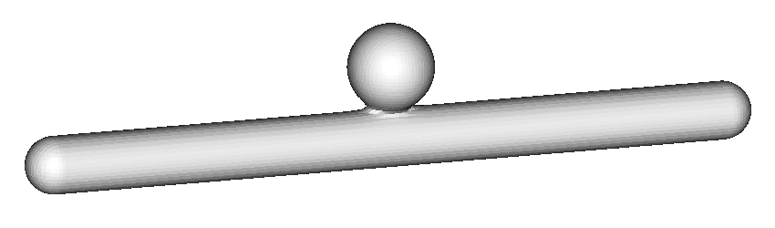

Shapes
Introduction
The Shapes package is a combination of:
- a mathematical model for infinitely precise smooth 3D volumes;
- a standard to describe 3D volumes with XML files;
- software to convert volume-descriptions into common 3D datastructures.

Using geometries based on real medical data for fluid flows in the
scientific community has proven to be difficult, because such data
cannot be generated at arbitrary precision, cannot be freely shared for
the purpose of cross-validation, may suffer from defects, and does not
come in a format that is convenient for all simulation platforms.
The answer to these problems is the Shapes package.
In short, Shapes ....
- offers an infinitely precise representation;
- has no privacy/intellectual property constraints;
- uses a platform-indendent representation;
- naturally produces smooth shapes;
- supports conversion to several formats for explicit volume representation.
Installation
Step 1: Get the Source...
... from http://tech.unige.ch/shapes/.
Step 2: Requirements
You'll need the latest Shapes source, a recent compiler
from the following list,
and the following tools and libraries:
Step 3: Compiling
The build system of Shapes is based on
CVMLCPP's
build system, which offers a few standard configurations or
alternatively allows you to control the build by defining environment
variables. Note: CVMLCPP has to be installed, not merely unpacked.
Before you compile, edit the Makefile. There is a short section to
configure some variables, each of which are explained. It is possible to
considerably speed up Shapes by allowing it to use the GNU
Scientific Library. To enable this, edit the Makefile, and make sure
the line concerning the BACKEND is not commented out.
To compile and install, unpack the source, enter the directory
shapes, and, if you like, edit the Makefile. Then, try:
$ make; sudo make install
If you'd rather like to use the Open64 compiler, compile in debug mode
and not use GSL, try:
$ make CNF=open64 MODE=debug; sudo make CNF=open64 MODE=debug install
Creating Shapes
There is a separate guide available that
explains how to create and define shapes without getting into the
mathematics involved.
Command Line Tool Manual
The command line tool is called shapes. It converts shapes in
their native implicit representation in XML-format into a number of
different explicit formats. In order to make the conversion, the ``field''
will be sampled at a regular interval, which is referred to as the
voxel-size. The exact size of the shape in voxels cannot be
determined until after sampling, so the size of the output cannot be
specified.
Shapes is not only a command-line program, it can also be used
in the form of a library. Programmers can refer to the documentation of the
Application Programmers' Interface.
Synopsis
shapes <-I|-S|-V|-T> <voxel-size> <file> [output]
Supported options are clarified in the table below:
-I|-S|-V|-T |
Select the format of the output.
|
voxel-size |
The sample-interval or discretisation window. The smaller this
number, the more accurate the output will be. The output will
also be larger. If a value of 1 is used to convert the example
above with a tube stretching from -50 to 50 along the X-axis, then
the output will contain about 100 voxels in the X-dimension. |
file |
The input file, should be an XML-file containing a valid shape. |
output |
(Optional) Name of the file where output will be written.
If not given, shapes will automatically select a
name based on the requested output format. |
Note: When the shape is converted to Meta-Image format, the
"image" will actually be the 3D field rather than an image.
Paraview can be used to visualize
the result. Load the resulting .mhd file in paraview, then select
"contour" and set a single isosurface at a value of '1' to obtain the
shape.
Note: octrees are exported in a zlib-compressed XML-based format. To read
them back, you can use Boost's IOstreams as
in this example:
#include <string>
#include <fstream>
#include <iostream>
#include <boost/iostreams/filtering_stream.hpp>
#include <boost/iostreams/filter/gzip.hpp>
#include <cvmlcpp/volume/DTree>
cvmlcpp::DTree<short int, 3> readVoxTree(std::string fileName)
{
cvmlcpp::DTree<short int, 3> voxtree;
std::ifstream f(fileName.c_str());
boost::iostreams::filtering_istream in;
in.push(boost::iostreams::gzip_decompressor());
in.push(f);
in >> voxtree;
// 'f' is closed automatically
return voxtree;
}
Credits
- Fokko Beekhof: creator, lead programmer
- Guntram Berti: suggestions and code contributions for dampening, intersection and difference structures, and ITK export
- Jonas Lätt: testing, suggestions on orientation and performance issues
|